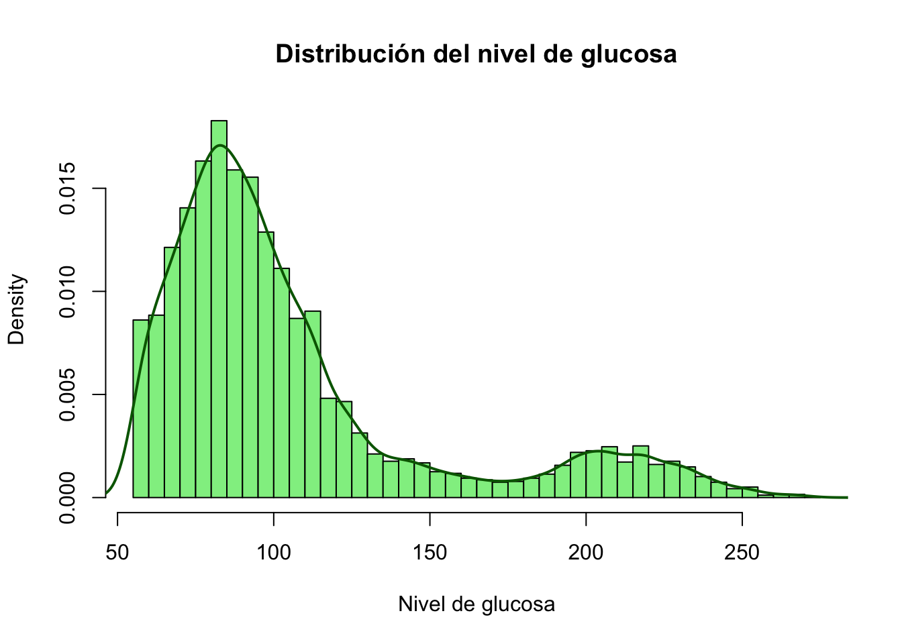
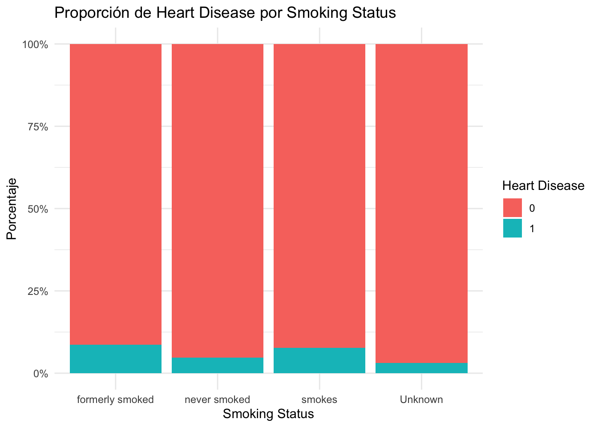

| Variable | Tipo.de.Variable | Escala.de.Medición |
|---|---|---|
| gender | Categórica | Nominal |
| age | Cuantitativa | Ratio |
| hypertension | Categórica | Ordinal |
| heart_disease | Categórica | Nominal |
| ever_married | Categórica | Nominal |
| work_type | Categórica | Nominal |
| Residence_type | Categórica | Nominal |
| avg_glucose_level | Cuantitativa | Ratio |
| bmi | Cuantitativa | Ratio |
| smoking_status | Categórica | Nominal |
| stroke | Categórica | Nominal |
4 Estadística Descriptiva
Este capítulo utiliza un conjunto de datos real descargado de Kaggle: Stroke Prediction Dataset o Github, que contiene información demográfica, médica y conductual de pacientes. El objetivo es explorar los datos aplicando técnicas de estadística descriptiva, apoyados por gráficos, código en R y una aplicación Shiny y material audiovisual.
4.1 Carga y descripción del conjunto de datos
datos <- read.csv("healthcare-dataset-stroke-data.csv")
head(datos) id gender age hypertension heart_disease ever_married work_type
1 9046 Male 67 0 1 Yes Private
2 51676 Female 61 0 0 Yes Self-employed
3 31112 Male 80 0 1 Yes Private
4 60182 Female 49 0 0 Yes Private
5 1665 Female 79 1 0 Yes Self-employed
6 56669 Male 81 0 0 Yes Private
Residence_type avg_glucose_level bmi smoking_status stroke
1 Urban 228.69 36.6 formerly smoked 1
2 Rural 202.21 N/A never smoked 1
3 Rural 105.92 32.5 never smoked 1
4 Urban 171.23 34.4 smokes 1
5 Rural 174.12 24 never smoked 1
6 Urban 186.21 29 formerly smoked 14.2 Gráficos descriptivos (Variables Cuantitativa)
4.2.1 Boxplot de edad según presencia de ACV
boxplot(age ~ stroke, data = datos, main = "Edad por Stroke", col = "lightblue")
4.2.2 Histograma de glucosa promedio
hist(datos$avg_glucose_level,
main = "Distribución del nivel de glucosa",
xlab = "Nivel de glucosa",
col = "lightgreen",
probability = TRUE, breaks = 50) # activa escala de densidad
lines(density(datos$avg_glucose_level), col = "darkgreen", lwd = 2) # curva de densidad
4.2.3 scatter plot (diagrama de dispersión) entre las variables Age y Bmi
plot(datos$age, datos$bmi,
main = "Relación entre Edad y BMI",
xlab = "Edad",
ylab = "BMI",
pch = 19, col = "darkblue")
4.3 Gráficos descriptivos (Variables Categóricas)
4.3.1 Gráfico de barras apiladas
library(ggplot2)
library(dplyr)
datos %>%
count(smoking_status, heart_disease) %>%
group_by(smoking_status) %>%
mutate(porcentaje = n / sum(n) * 100) %>%
ggplot(aes(x = smoking_status, y = porcentaje, fill = factor(heart_disease))) +
geom_col(position = "fill") +
scale_y_continuous(labels = scales::percent) +
labs(title = "Proporción de Heart Disease por Smoking Status",
x = "Smoking Status", y = "Porcentaje", fill = "Heart Disease") +
theme_minimal()
4.3.2 graficon de frecuencia absoluta y relativa
library(patchwork) # para p1 + p2
# Gráfico de frecuencia absoluta
p1 <- ggplot(datos, aes(x = smoking_status)) +
geom_bar(fill = "steelblue") +
theme_minimal() +
theme(axis.text.x = element_text(angle = 25)) + # ROTACIÓN del eje x
labs(title = "Frecuencia absoluta smoking status", x = "Smoking Status", y = "Frecuencia")
# Gráfico de frecuencia relativa
p2 <- datos %>%
count(smoking_status) %>%
mutate(porcentaje = n / sum(n) * 100) %>%
ggplot(aes(x = smoking_status, y = porcentaje)) +
geom_col(fill = "darkorange") +
theme_minimal() +
theme(axis.text.x = element_text(angle = 25)) + # ROTACIÓN del eje x
geom_text(aes(label = paste0(round(porcentaje, 1), "%")), vjust = -0.5) +
labs(title = "Frecuencia relativa smoking status", x = "Smoking Status", y = "Porcentaje")
# Mostrar ambos gráficos lado a lado
p1 + p2
4.3.3 Gráfico de barras agrupadas
ggplot(datos, aes(x = smoking_status, fill = factor(heart_disease))) +
geom_bar(position = "dodge") +
labs(title = "Smoking Status vs Heart Disease (Barras Agrupadas)", x = "Smoking Status", fill = "Heart Disease") +
theme_minimal()
4.3.4 Mapa de calor de una tabla de contingencia
library(reshape2)
tabla <- table(datos$smoking_status, datos$heart_disease)
df_heat <- as.data.frame(tabla)
names(df_heat) <- c("smoking_status", "heart_disease", "frecuencia")
ggplot(df_heat, aes(x = heart_disease, y = smoking_status, fill = frecuencia)) +
geom_tile() +
geom_text(aes(label = frecuencia), color = "white") +
scale_fill_gradient(low = "lightblue", high = "darkblue") +
labs(title = "Heatmap: Smoking Status vs Heart Disease",
x = "Heart Disease", y = "Smoking Status") +
theme_minimal()
4.3.5 Gráfico de pastel (pie chart)
datos %>%
count(smoking_status) %>%
mutate(porcentaje = n / sum(n) * 100,
label = paste0(smoking_status, ": ", round(porcentaje, 1), "%")) %>%
ggplot(aes(x = "", y = porcentaje, fill = smoking_status)) +
geom_col(width = 1) +
coord_polar(theta = "y") +
theme_void() +
geom_text(aes(label = label), position = position_stack(vjust = 0.5)) +
labs(title = "Distribución de Smoking Status")
4.4 Aplicación interactiva
Como complemento a este capítulo, se ha desarrollado una aplicación interactiva utilizando Shiny que permite explorar conceptos de estadística descriptiva y análisis exploratorio con visualizaciones dinámicas y opciones personalizables para el usuario.
üîó Accede a la app aqu√≠:
üëâ https://deiversg.shinyapps.io/app_statistical_Methods/
üé• Video tutorial ‚Äì ¬øC√≥mo usar la app?
Video tutorial: ¿Cómo usar la app?
4.5 Recursos audiovisuales
4.5.1 üé• Introducci√≥n a la estad√≠stica descriptiva
4.5.2 üìä Visualizaci√≥n de datos en R (boxplots, histogramas)
Video: Visualización de datos en R
4.5.3 üêç Exploraci√≥n con Python (Seaborn, pandas)
Video: Exploración con Python
4.6 Conclusión
El análisis exploratorio de datos con herramientas como R y Python permite obtener una comprensión inicial robusta de los patrones en datos biomédicos. Esto es esencial antes de aplicar modelos predictivos como regresión o clasificación. El uso de gráficos y resúmenes numéricos fortalece la interpretación clínica y estadística de los fenómenos observados.